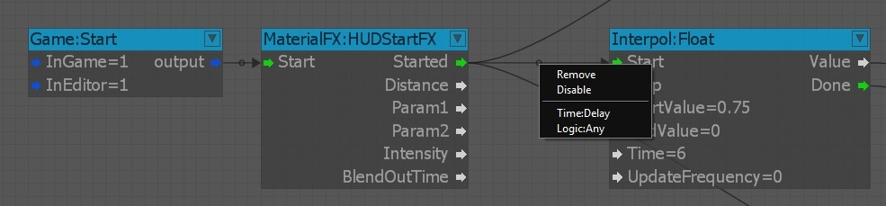
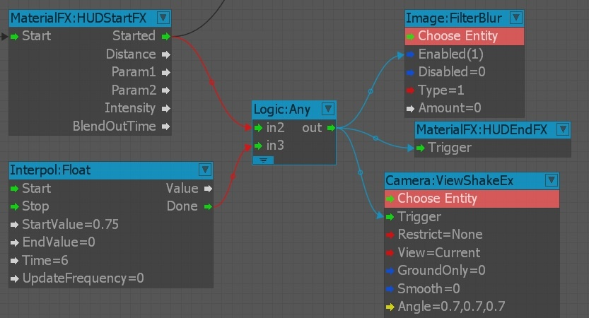
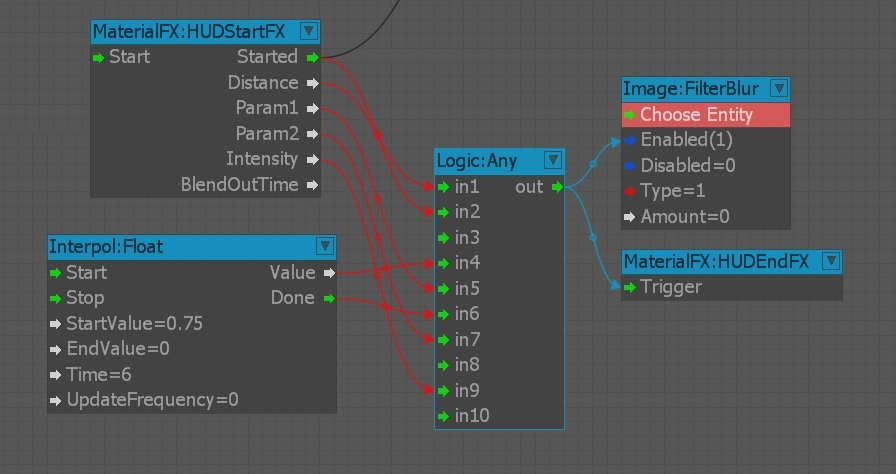

Overview
To create a new link between two nodes, click any output port and drag it to the desired input port. When the nodes are moved, the link will automatically adjust itself.
To delete a link, right-click on the link, and then select Remove. You can also click the input port and drag the link away from the port. When the link is dropped on the background pane, the link will be removed.
Link Context Menu
Every link has a context menu that can be opened by right-clicking the handle in the middle of the link.

The link context menu has four entries:
| Entry | Description |
|---|---|
| Remove | removes the selected link |
| Disable/Enable | Disables/enables the selected link. NOTE: A disabled link is grayed out, and is not processed the output port is activated. |
| Time:Delay | Adds a node that provides a delay between the nodes connected by the link with a default delay time of 1 second. NOTE: that each input port can have only one link connected to it. |
| Logic:Any | Adds a node that acts as helper node that allows you to use more links on a single input port. Output ports are not limited and can have an unlimited number of links. |
Link Highlighting
Input and output links are highlighted to make the debugging of complex graphs easier. You can also hover your mouse over input/output ports to highlight the links. You can view the type of links connected to the node based on the color. When you select a node, the input links are highlighted in red and the output links in blue.

Multiple Inputs on a Single Port
Usually, input port cannot have multiple links assigned to them. A helper node can act as a bridge for connecting multiple links to an input port. For example, the Logic:Any node can take multiple links and reroute them to the output port.

Every time an input is received on one of the input ports, the output port is triggered. The Logic:Any node is also the best way to build a loop construction.
Link Appearance
The color of the links and nodes can be changed in the Preferences menu of the Sandbox Editor.